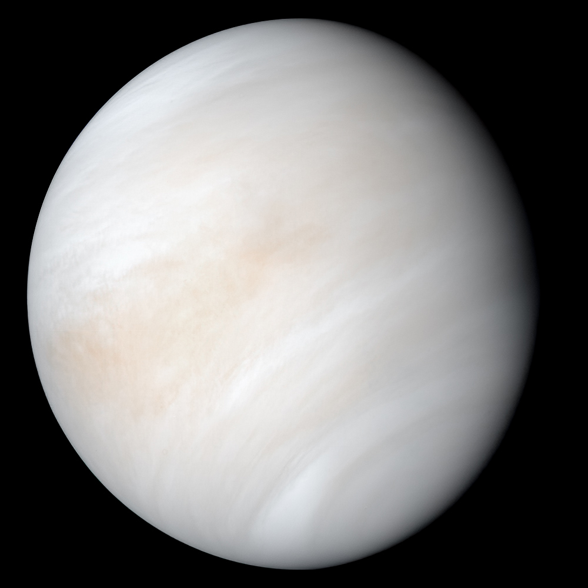
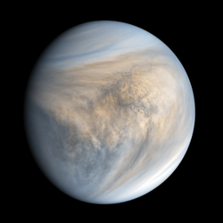

Venus
Views of Venus


Five Facts About Venus
- Venus is the second planet from the Sun.
- Venus is the hottest planet in our solar system.
- Its thick atmosphere is made mostly of carbon dioxide, which traps heat through a powerful greenhouse effect.
- Venus rotates in the opposite direction to most planets.
- Venus has no natural moons.
Turn Up the Heat
How hot is the hottest planet? Move the slider from familiar Earth temperatures toward Venus's average surface temperature of about 867°F (464°C).
86°F
30°C
86°F is an example of a warm day on Earth.